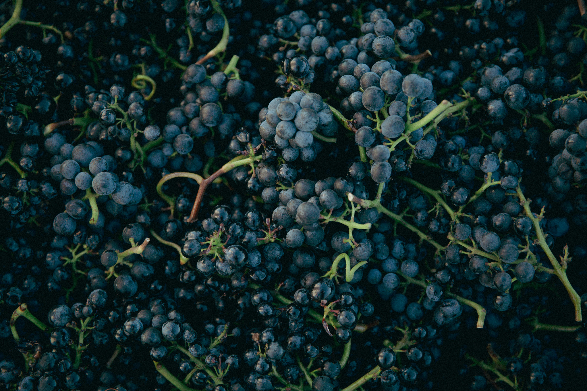

Як правильно зберігати вино вдома: повний гайд від сомельє
Автор: Максим Гілітуха | Час читання: 7 хв

Чи знали ви, що понад 70% елітного алкоголю втрачає свій унікальний букет ще до того, як штопор торкнеться корка, просто через банальні помилки власників? Багато хто вважає, що достатньо поставити гарну пляшку на поличку у вітальні або заховати в кухонну шафу біля плити. Але насправді цей благородний напій — немов живий організм, який постійно дихає, розвивається і надзвичайно гостро реагує на навколишнє середовище. Якщо ви хочете, щоб кожен келих дарував справжню насолоду, важливо чітко розуміти, як правильно зберігати вино. У цьому детальному матеріалі ми розкриємо всі секрети професійних сомельє: від ідеального мікроклімату до правильного розміщення вашої колекції у звичайній квартирі.
4 головні правила: як правильно зберігати вино у закритій пляшці
Незалежно від того, чи плануєте ви відкрити пляшку цими вихідними, чи збираєтеся витримувати її кілька років, існують чотири фундаментальні стовпи, на яких тримається винна стабільність. Порушення хоча б одного з них неминуче призведе до деградації смаку.
Оптимальна температура зберігання вина
Температурний режим — це найважливіший фактор, який впливає на швидкість хімічних реакцій всередині скла. Ідеальна температура зберігання вина коливається в межах від +10°C до +15°C. Для більшості сортів ідеальним показником вважається «золота середина» — +12°C. Якщо температура підніметься вище +20°C, напій почне стрімко старіти, його смак стане пласким, а спиртуозність вийде на перший план. З іншого боку, якщо опустити показники нижче +5°C, процеси дозрівання повністю зупиняться, а екстремальний холод може навіть виштовхнути корок. Проте найлютіший ворог — це різкі перепади. Стрибки від тепла до холоду змушують рідину розширюватися і стискатися, що неминуче пошкоджує герметичність корка і пропускає всередину кисень.
Рівень вологості: бережемо корок

Натуральний корок потребує вологи, щоб залишатися пружним. Оптимальна вологість у приміщенні або винній шафі має становити 60–80%. Якщо повітря буде занадто сухим (як це часто буває у квартирах під час опалювального сезону), корок пересохне, стиснеться і почне пропускати повітря. Це призведе до незворотного окислення. Якщо ж вологість перевищить 85%, на етикетках може з'явитися цвіль, що зіпсує естетичний вигляд вашої колекції, хоча сам напій при цьому не постраждає.
Захист від світла та ультрафіолету

Світло, а особливо прямі сонячні промені, запускає фотохімічні реакції. Ультрафіолет руйнує таніни та органічні сполуки, через що з'являється неприємний аромат, який фахівці називають «хворобою світла» (часто нагадує запах мокрого картону або сірки). Саме тому виробники використовують темне зелене або коричневе скло для розливу. Тримайте свою колекцію у повній темряві або використовуйте LED-освітлення, яке не випромінює УФ-спектр.
Горизонтальне положення
Чому всі професійні стелажі створені для того, щоб пляшки лежали? Відповідь знову ховається у натуральному корку. Коли рідина постійно омиває корок зсередини, він залишається зволоженим, розбухлим і забезпечує ідеальну герметизацію. Якщо поставити пляшку вертикально на кілька місяців, корок неминуче пересохне. Виняток становлять лише екземпляри із гвинтовими кришками (screw caps) або скляними пробками — їх можна сміливо тримати стоячи.
Термін придатності відкритого вина: як врятувати залишки
Свято закінчилося, а у вас залишилося пів пляшки чудового напою. Щойно ви витягли штопор, всередину потрапив кисень, і запустився процес окислення. Якщо спочатку аерація допомагає букету розкритися, то вже за кілька годин вона починає його вбивати, перетворюючи розкішний алкоголь на банальний оцет.
Термін придатності відкритого вина напряму залежить від його типу:
- Ігристі (Шампанське, Просекко, Кава): 1–3 дні в холодильнику зі спеціальним стопером, що утримує тиск.
- Легкі білі та рожеві: 3–5 днів у холоді.
- Насичені білі (наприклад, витримане Шардоне): 3–4 дні.
- Червоні вина: 3–5 днів у прохолодному темному місці. Чим більше танінів (наприклад, Каберне Совіньйон або Шираз), тим довше вони чинять опір кисню.
- Кріплені (Портвейн, Херес): завдяки високому вмісту спирту та цукру можуть стояти відкритими від 2 до 4 тижнів.
Щоб максимально продовжити життя напою, обов'язково щільно закривайте його «рідним» корком і використовуйте вакуумні помпи, які відкачують зайве повітря. Детальніше про подачу та оцінку смаку читайте в нашому матеріалі про як правильно дегустувати вино крок за кроком.
Найкращі та найгірші місця для зберігання у квартирі
Якщо у вас немає власного підземного погреба, доводиться шукати альтернативи у звичайному житлі.
Найгірші місця
- Кухня. Це епіцентр катастрофи. Тут постійно змінюється температура (від плити та духовки), висока вологість і багато сторонніх запахів, які можуть проникнути через мікропори корка.
- Підвіконня. Прямі сонячні промені та спека від радіаторів опалення вб'ють напій за лічені дні.
Найкращі рішення
- Спеціалізована винна шафа (клімат-контроль). Це інвестиція, яка повністю вирішує всі проблеми. Вона підтримує ідеальну температуру, вологість, має захист від вібрацій компресора та тоноване скло із захистом від ультрафіолету.
- Комора або темна шафа в коридорі. Якщо ви не плануєте витримувати колекцію роками, а купуєте її для споживання протягом кількох місяців, найтемніше і найпрохолодніше місце в домі без протягів стане цілком прийнятним тимчасовим рішенням.
Якщо ви шукаєте ідеальний напій для найближчої вечері, пропонуємо обрати та купити червоне сухе вино у нашому каталозі — від легких до насичених сортів для різних страв.
Часті запитання (FAQ)
Чи можна зберігати вино в холодильнику?
Звичайний побутовий холодильник не підходить для довготривалого зберігання. По-перше, чи можна зберігати вино в холодильнику тижнями? Ні, оскільки температура там занадто низька (близько +4°C), а повітря надзвичайно сухе, що швидко висушить корок. По-друге, побутовий компресор постійно випромінює мікровібрації, які збовтують осад і порушують структуру напою. Холодильник ідеально підходить лише для того, щоб охолодити біле, рожеве або ігристе за кілька годин до подачі, або для збереження вже відкритої пляшки на кілька днів. Більше відповідей на подібні питання — у розділі часті питання про вино та подачу.
Чи кожна пляшка стає кращою з віком?
Це один із найпоширеніших міфів. Насправді близько 90% всього алкоголю, що продається у світі, створено для споживання тут і зараз (протягом 1–3 років з моменту збору врожаю). Лише визначні вінтажі з потужними танінами або високою кислотністю (наприклад, топові Бордо, Бароло або Бургундія) мають потенціал до витримки і розвитку протягом десятиліть.
Бажаєте дізнатися більше про потенціал витримки різних сортів? Запрошуємо вас записатися на дегустацію у Луцьку до простору Vine Hunters, де наші сомельє поділяться своїм досвідом.
Висновок
Створення ідеальних умов для вашої домашньої винотеки не вимагає надмірних зусиль, якщо ви розумієте базові фізичні та хімічні процеси. Контролюйте температуру, уникайте світла, стежте за вологістю та тримайте пляшки горизонтально. Тепер, коли ви точно знаєте, як правильно зберігати вино, кожен ваш вечір з келихом буде сповнений лише приємних емоцій та бездоганних смаків.